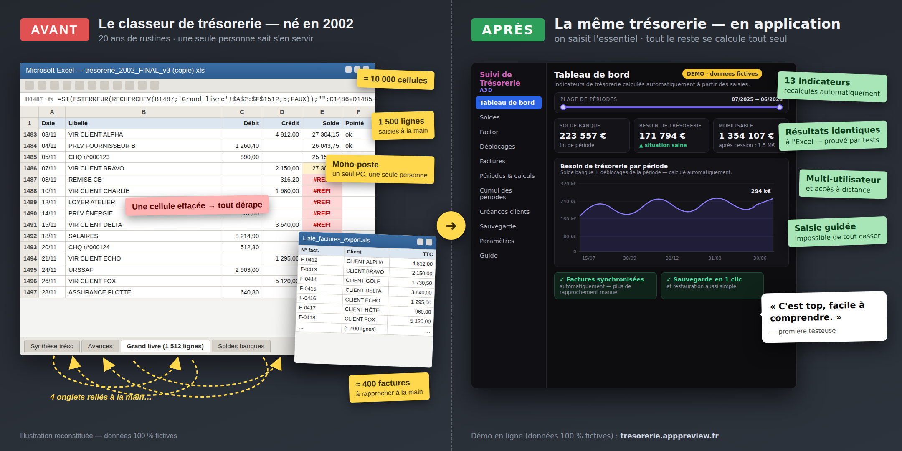

ERP Conseil · applications de gestion pour TPE & PME
Votre fichier Excel
devient une application
simple · rapide · stable — pour TPE & PME

Le même suivi, avant / après — cliquez pour agrandirÇa vous parle ?
- Une cellule effacée par erreur, et tous les chiffres dérapent.
- Une seule personne sait vraiment comment le fichier fonctionne.
- Impossible de travailler à deux dessus en même temps.
- Vous passez plus de temps à vérifier les chiffres qu'à les utiliser.
Votre Excel n'est pas mauvais. Il a juste atteint son plafond.
Étude de cas
Un classeur Excel de 20 ans devenu une application
Avant — le classeur Excel
- Créé en 2002
- 4 onglets reliés à la main
- ≈ 10 000 cellules
- Grand livre bancaire de 1 500 lignes
- ≈ 400 factures rapprochées à la main
- Mono-poste
Après — l'application
- Saisie de l'essentiel dans des formulaires simples
- 13 indicateurs recalculés automatiquement
- Factures synchronisées
- Tableau de bord et graphiques
- Multi-utilisateur, accès à distance
- Sauvegarde / restauration en 1 clic
- Résultats prouvés identiques à l'Excel par des tests automatiques
« C'est top, facile à comprendre. » — première utilisatrice
Par respect des données de mes clients, toutes les illustrations proviennent de la démo (données fictives).
Comment je travaille
-
1
On regarde votre fichier ensemble
30 min, gratuit. Je vous dis honnêtement si ça vaut le coup… ou si Excel suffit encore.
-
2
Je construis, vous validez
Vous voyez l'application prendre forme sur vos cas concrets ; les calculs sont vérifiés par des tests contre votre Excel d'origine.
-
3
Vous êtes autonome
Application installée chez vous, sauvegarde en 1 clic, prise en main en quelques minutes — et je reste disponible.
Vos chiffres, en sécurité
Sessions sécurisées : chacun son accès.
Sauvegarde et restauration en 1 clic.
Sauvegarde automatique avant chaque mise à jour.
Calculs vérifiés par des tests automatiques (mêmes données → mêmes résultats que l'Excel).
Qui je suis
Eric Paysant. 28 ans dans des environnements de production industrielle, un premier projet data en 2001 — bien avant que ça s'appelle « de la data ». J'ai passé des années DANS les fichiers Excel des entreprises : c'est pour ça que je sais les remplacer sans perdre ce qui marchait.
Côté outils : Excel/VBA, Power BI, SQL, Python — et tout ce qu'il faut pour faire d'un classeur une vraie application.
Mon profil LinkedIn ↗Questions fréquentes
Combien ça coûte ?
Chaque fichier est différent : le diagnostic de 30 minutes est gratuit et je m'engage sur un devis fixe avant de commencer.
Combien de temps ?
Quelques semaines pour une application comme la démo, pas des mois. Vous continuez à travailler sur votre Excel pendant ce temps.
Et mes données ?
Elles restent chez vous : application installable en local, sauvegardes en 1 clic, et rien n'est publié — la démo en ligne ne contient que des données fictives.
Un fichier Excel critique qui vous fait peur ?
Parlons-en 30 minutes.